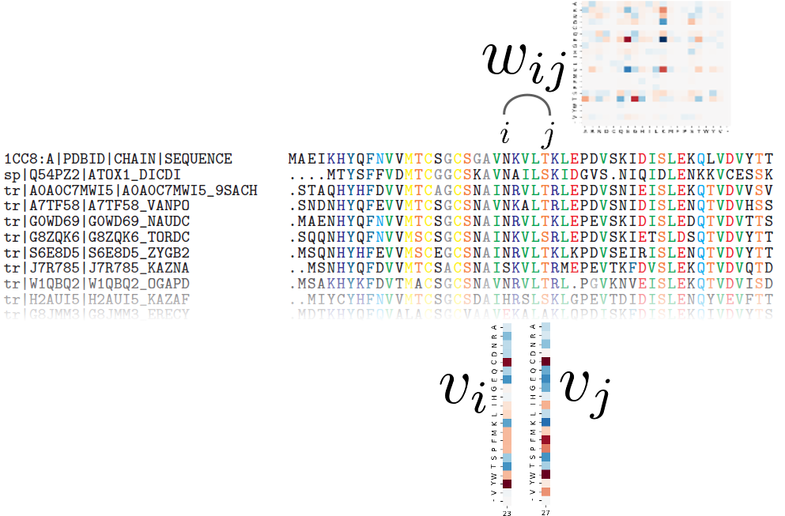

Overview
I am a computer scientist with a passion for molecular biology.
I discovered the dazzling world of proteins during my PhD at Université de Rennes 1 in Dyliss team,
under the supervision of François Coste
and Jacques Nicolas, from november 2017 to february 2021.
This thesis focused on protein sequence homology search and protein family modelling, with the added novelty of taking into account residue co-evolution .
As of today, homologous protein sequences are standardly modeled using profile Hidden Markov Models (pHMMs), statistical models that represent protein families with positional conservation information. Widely used packages such as HH-suite provide tools to perform sequence-HMM alignment and HMM-HMM alignment and the similarity score they yield is used to determine whether two protein sequences are homologous or not. While such models are powerful, they can only model each position in a protein independently of each other, yet it is well-known that two residues that are distant in the sequence can co-evolve, for instance when they are in contact in the 3D structure. In our work, we proposed to use a different type of model: the Potts model, a pairwise Markov Random Field originally introduced by Direct Coupling Analysis to predict contacts and protein-protein interactions. Its parameters can describe both positional conservation and couplings between positions, which make it a great candidate to model sets of homologous proteins.

During my PhD, I designed PPalign, a method to align two Potts models and give a similarity score for this alignment. The feasibility of this alignment method was assessed on a benchmark of low sequence identity reference sequence alignments, where suboptimal solutions were found in tractable time and the quality of our alignments was on average slightly better than our main competitor HHalign with respect to reference alignments, with better results on pairs with the lowest sequence identity
Since Potts models were originally designed to predict co-evolving positions within a given set of homologous sequences, comparing two Potts models representing two different sets of homologous sequences raised additional challenges and a need for canonicity. To address these challenges, I worked with Mathilde Carpentier at Atelier de BioInformatique (Institut de Systématique, Évolution, Biodiversité (ISYEB), Muséum National d'Histoire Naturelle (MNHN), Paris) as a post-doctoral researcher from 2021 to 2022. We paved the way for the modelling of protein sequences with direct coupling information for the special task of pairwise comparison.
Early in my thesis, I also had the opportunity to work with Witold Dyrka from Politechnika Wrocławska (Wrocław, Poland) on probabilistic context-free grammars with contact map constraints on proteins
Though protein language processing was my first love, I have become progressively interested in structural bioinformatics, and in the design of biologically active molecules.
As of may 2023, I am a postdoctoral research at 3BIO-BioInfo team at Université Libre de Bruxelles, working with Dimitri Gilis on de novo drug design for olfactory receptors using deep learning generative models.
Publications
| [1] | Hugo Talibart and François Coste. PPalign: optimal alignment of potts models representing proteins with direct coupling information. BMC bioinformatics, 22(1):1--22, 2021. [ bib ] |
| [2] | Hugo Talibart and François Coste. Compotts: Optimal alignment of coevolutionary models for protein sequences. In JOBIM 2020-Journées Ouvertes Biologie, Informatique et Mathématiques, 2020. [ bib ] |
| [3] | Witold Dyrka, Mateusz Pyzik, François Coste, and Hugo Talibart. Estimating probabilistic context-free grammars for proteins using contact map constraints. PeerJ, 7:e6559, 2019. [ bib ] |
Science outreach
As part of the 2018 Sciences en Cour[t]s festival, I explained my PhD project in a short video using slips of paper. (Video in french)
Resume
Download full resume here
Experience
Education
Contact
E-mail: